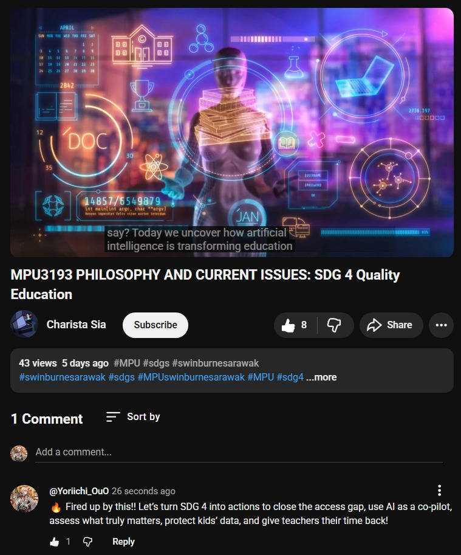
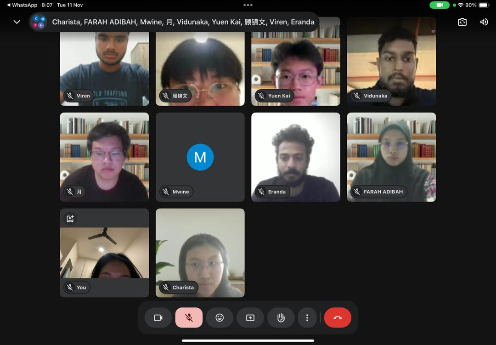

Post 1: YouTube campaign video
The main video introduces SDG 4, the five cases, and asks viewers to reflect on responsible classroom use of AI.

Responsible, human‑centred AI practices for SDG 4.
Short, evidence-based posts invite our peers to think about AI as a tool for deeper learning, not shortcuts. Explore the full video and supporting posts as we document the campaign journey.
Full YouTube video for our SDG 4: AI in Education campaign.
Main audience: Swinburne students and the wider university community who are experimenting with AI in class. We target study groups that want concise tips and lecturers who are setting clearer expectations.
Main message: AI can improve quality education when paired with classroom guidelines, teacher support, and better access. Platforms: one YouTube video and a pair of Instagram posts to meet students where they already are. Tone: hopeful, pragmatic, and grounded in research rather than hype.
Central question we pose in every caption: “How should AI be used in your classes so that it improves learning instead of replacing thinking?”
The main video introduces SDG 4, the five cases, and asks viewers to reflect on responsible classroom use of AI.

A Instagram post promoting the video produced by our group to gain more views and exposure.
Weekly meeting with all members to discuss the rundown or progress and next steps of the project.

What worked: short, practical tips tied to real study habits, and captions that end with a question drew more replies. Visuals that mirror campus life kept the tone approachable and aligned with SDG 4’s emphasis on inclusion.
What did not: long text blocks and posts without a clear call to action had lower saves. Future rounds will favour reels and carousels with one action per slide and alt text for every image to keep accessibility high.
Next steps: post at times when students are active, test more bilingual captions, and add a follow-up carousel on how NEP and the Rukun Negara guide responsible AI use. Clearer communication supports equitable access to guidance, which keeps the campaign aligned with SDG 4 and the NEP’s holistic vision.